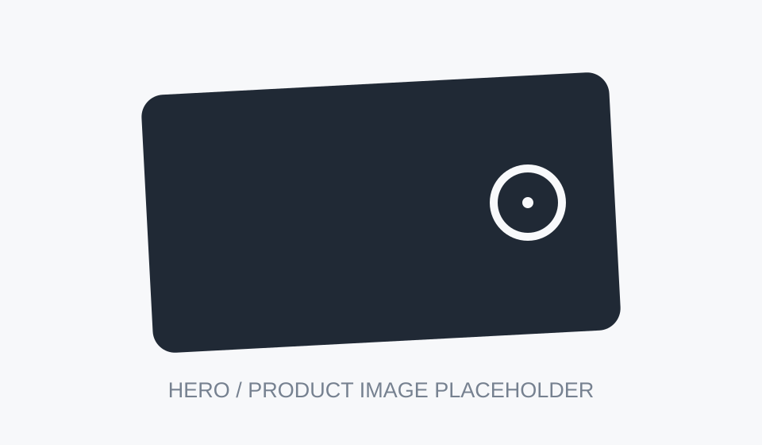

#1 Wallet Tracking Card in 2026
Our top pick combines a genuinely slim card-style build with rechargeable power and a broad phone-finding network. It is designed to disappear into a wallet while still providing useful separation alerts and nearby sound.
It also avoids the ongoing subscription model used by some competitors, making it a simple set-it-and-forget-it option for everyday carry.
See today's offer →
I Tested the Best-Selling Wallet Trackers. Here’s Why This One Ranked #1
Written byBenjamin CarterConsumer Tech · August 20, 2026
Losing a wallet at the wrong time is expensive, stressful, and disruptive. I wanted a tracker that could stay inside the wallet without creating a lump, demanding constant charging, or locking basic features behind a monthly fee.
So I compared card-shaped trackers in ordinary situations: around the house, in a car, inside a bag, at shops, and while traveling. The differences became obvious quickly.
My Test Results
The top card stayed easy to locate without changing how the wallet felt in a pocket. Nearby sound was strong enough to hear through a bag, while location updates were consistent enough to make the device useful beyond the same room.
Durability also mattered. A wallet tracker gets squeezed, bent slightly, exposed to moisture, and rubbed against other cards every day, so the best product needs to tolerate normal wear rather than just look good out of the box.
The Results
- Reliable phone-network integration. The best card connected quickly and stayed easy to find from the same native app users already know.
- Slim, discreet design. It fit in a standard card slot without making the wallet noticeably thicker.
- Built for daily use. The card handled normal bending, pockets, bags, and moisture without feeling fragile.
- Useful alerts without extra fees. Separation alerts and nearby sound were available without a monthly subscription.
Out of the trackers tested, the top pick offered the best balance of slimness, tracking reliability, charging convenience, and everyday value.
Value
A tracker only has value if you keep it in your wallet and it is powered when you actually need it. The combination of long battery life, simple charging, and no recurring fee makes the top option easier to justify over time.
Never Lose Important Items Again
Card trackers are useful beyond wallets too. They can sit inside passport holders, laptop sleeves, handbags, backpacks, and luggage pockets without attracting attention.
Customer Reviews
★★★★★
“The slim shape is the biggest difference for me. It fits like a normal card and the alert has already helped me find my wallet twice.”
Jake H. — New Hampshire★★★★★
“Setup was simple and I like that I do not need another subscription just to keep track of my stuff.”
Hannah S. — Oregon★★★★★
“I forget where I put things constantly. The nearby sound alone makes this worth keeping in my wallet.”
Dana F. — GeorgiaPurchase and Delivery Process
The top product is positioned as a direct-to-consumer offer, so the purchase process is simple: choose a quantity, enter shipping details, and complete checkout. Promotional pricing can vary.
Where Can I Buy the Top-Ranked Tracker?
1.Visit the official product page.
2.Select the number of tracker cards you want.
3.Enter shipping and payment information.
4.Complete checkout and follow the setup instructions when it arrives.